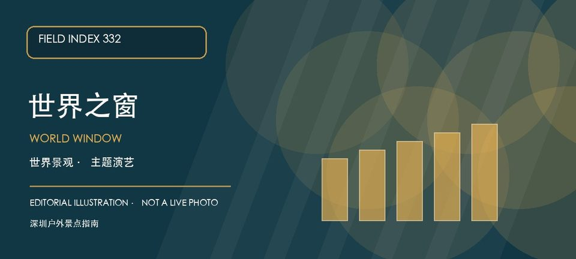

适合谁
适合亲子、朋友结伴、首次来深圳的游客和愿意步行半日以上的人；高温或节庆客流时应降低单日项目密度。

SHENZHEN GUIDE · 332
南山区深南大道9037号·华侨城 · 主题景区
世界之窗以世界各地代表性景观、主题演艺和节庆活动组成一座大型城市主题景区，是华侨城旅游度假区中适合整日安排的入口。初次到访不必把所有区域都走完，可以先选建筑景观或演艺作为主线，再根据当天演出、天气和人流调整路线。景区项目、票价和夜间活动会随季节变化，出发前应以官方公告为准。
WHY GO
适合亲子、朋友结伴、首次来深圳的游客和愿意步行半日以上的人；高温或节庆客流时应降低单日项目密度。
先查看当天开放区域、演出和入园规则，只选一条主题分区主线；把固定演出时间写进路线，并预留中途休息和提前离园的选择。
公共交通先到华侨城片区，再按世界之窗官方公开入口导航；出发前核对当天开放入口、预约与演艺安排，避免把相邻景区入口混淆。
自驾按景区官方入口或华侨城片区正规停车场导航；车位、收费与社会车辆准入以现场公告为准，不在深南大道辅路或消防通道临停。
全年可安排；夏季避开正午并准备饮水，雷雨、高温预警或节庆限流时及时缩短路线；夜场和节庆活动以官方公告为准。
NEARBY IDEAS
 授权实景图
授权实景图
何香凝美术馆位于华侨城，以何香凝艺术、二十世纪中国美术研究和当代专题展构成稳定学术方向，馆舍与华侨城文化设施可顺路组合。
 编辑配图·非现场实景
编辑配图·非现场实景
欢乐谷是华侨城片区以游乐设施、主题分区、现场演出和季节活动为主的城市主题乐园，适合把一整天交给少数重点项目，而不是在入口处临时决定所有路线。
 编辑配图·非现场实景
编辑配图·非现场实景
华侨城国家湿地公园位于华侨城，预约制管理保护城市中心少见的滨海湿地生境，核心体验是导览中的鸟类、红树林和水位观察而非自由穿行。